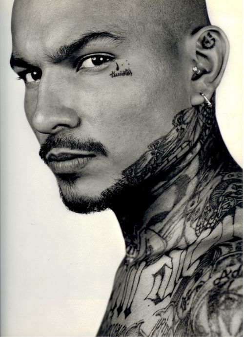
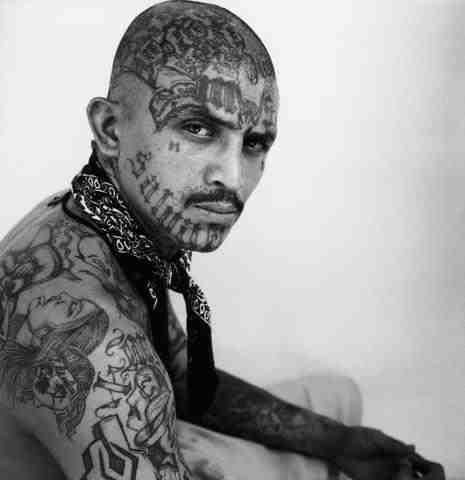
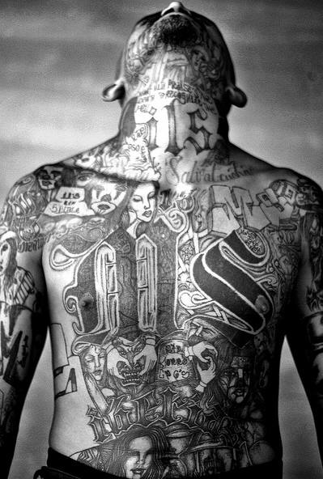
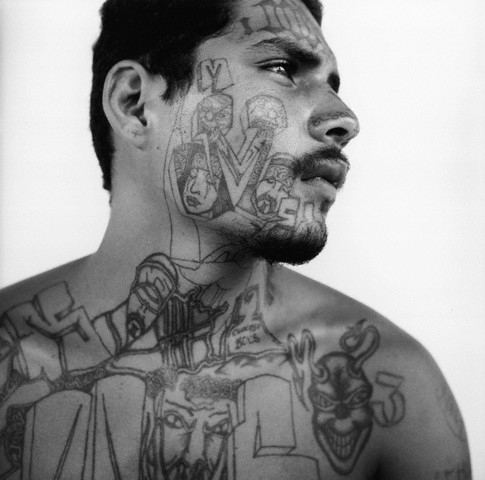

La Mara Salvatrucha 13 (MS-13) a été formé à Los Angeles, en Californie, dans les années 1980 par les jeunes immigrants salvadoriens et les jeunes adultes qui ont été victimisés par d’autres gangs. MS-13 est rapidement devenu connu comme l’un des gangs les plus violents dans la région car beaucoup de leurs membres fondateurs avaient de l’expérience ou une formation dans la guérilla, gagnant ainsi un niveau de sophistication qui a permis de remplacer leurs rivaux du gang.
Le gang est connu pour être impliqué dans tous les aspects de l’activité criminelle. En raison de leurs liens avec leur ancienne patrie, les membres MS-13 ont accès à des armes de pointe, rendant ainsi le trafic d’armes une de leurs principales activités criminelles. En dépit de leur accès à des armes, il y a eu beaucoup de meurtres très médiatisés et les agressions dans lesquelles MS-13 avait utilisé des machettes pour attaquer leurs victimes. Le gang est fortement impliqué dans les cambriolages, les vols de voitures, les ventes de stupéfiants, la contrebande d’armes, d’assassinat, de viol, de prostitution, d’agressions et d’intimidation de témoins.
Alors que MS-13 est victime généralement des membres de gangs rivaux et les incidents y ont inclus, malheureusement, des civils innocents. Le gang crée sans cesse des guerres avec d’autres gangs en raison de son recrutement agressif de nouveaux membres et l’expansion dans de nouvelles activités illicites. Actuellement, la plus grande rivalité se fait face à des gangs hispaniques: 18th Street, South Side Locos (SSL) et de la rue Thug criminels. Cependant la Mara Salvatrucha peut conter sur l’aide de la Mafia Mexicaine, du Cartel de Sinaloa, du Cartel du Golfe et bien d’autres.
MS-13 membres s’identifient à travers divers indicateurs de gangs tels que les tatouages, les vêtements, les graffitis, et des signes de la main. MS-13 membres sont connus pour utiliser différents tatouages dont certains sont assez grands pour couvrir l’ensemble du dos; d’autres sont assez petits pour tenir dans le coup.
La taille du tatouage est parfois une indication du degré d’implication. Les membres plus âgés ou les plus actifs portent les tatouages les plus grands. MS-13 est représenté par le nombre « 13 » en chiffres arabes, des chiffres romains, ou une combinaison des deux. (« MSXIII » est le plus utilisé).